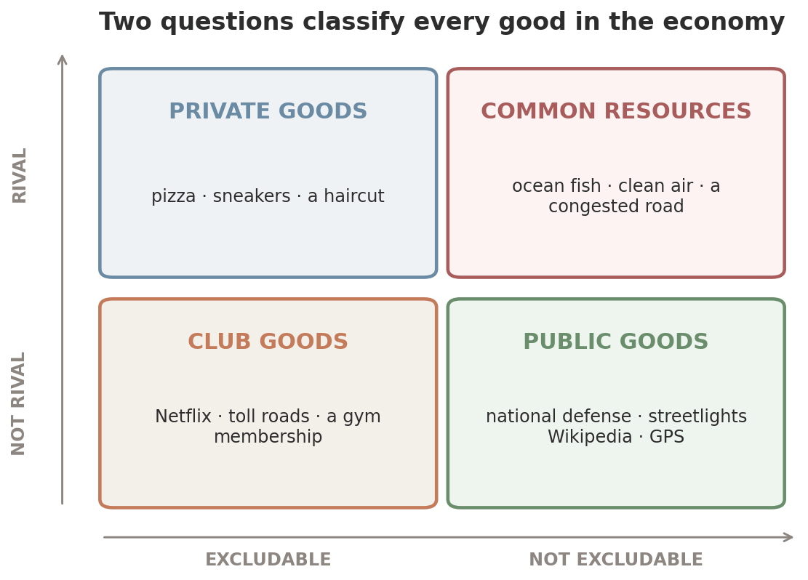
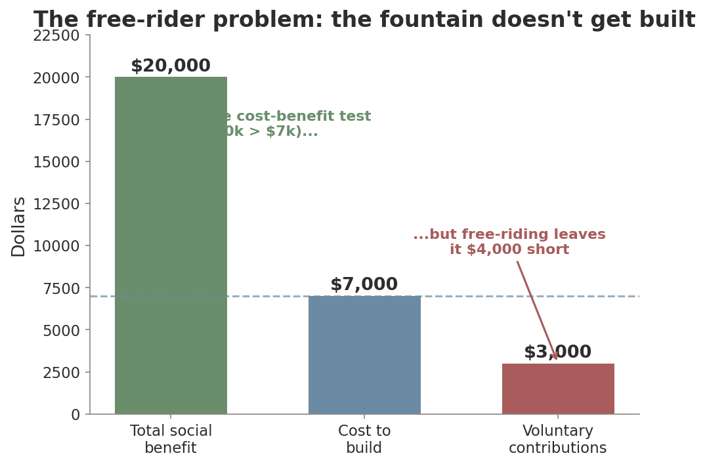
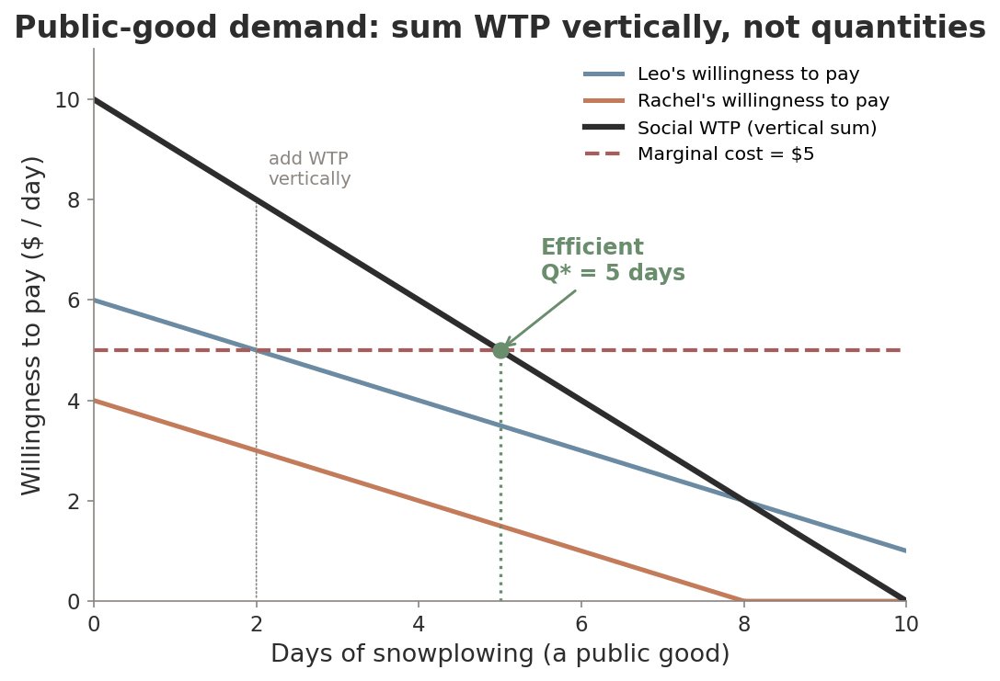
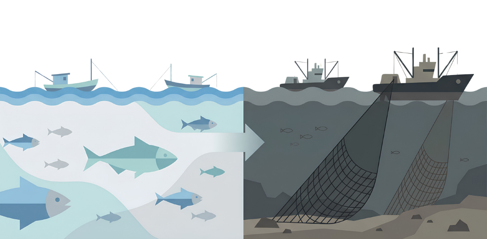
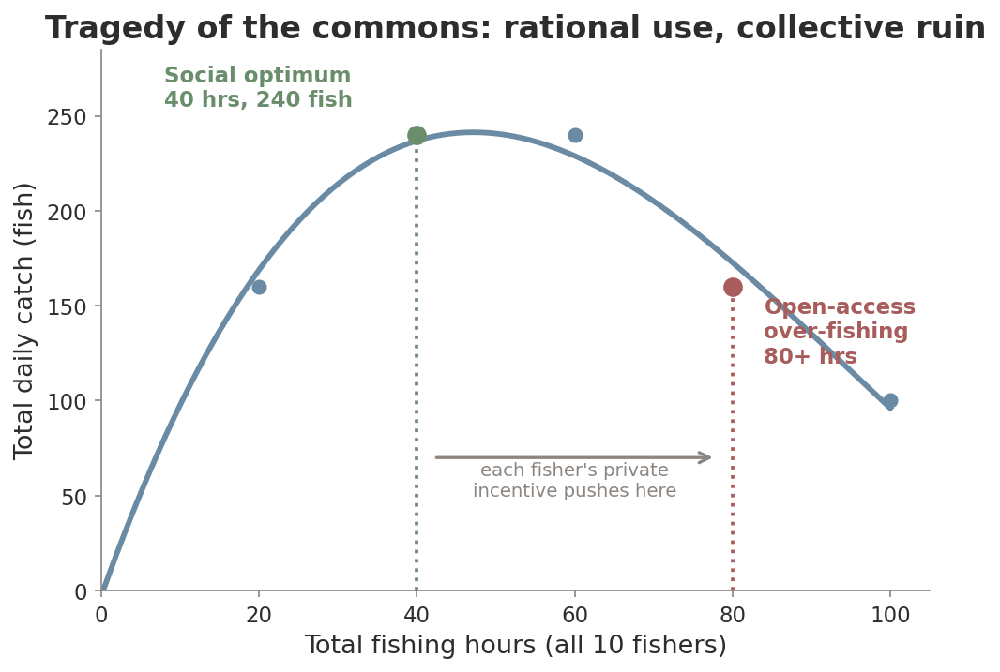
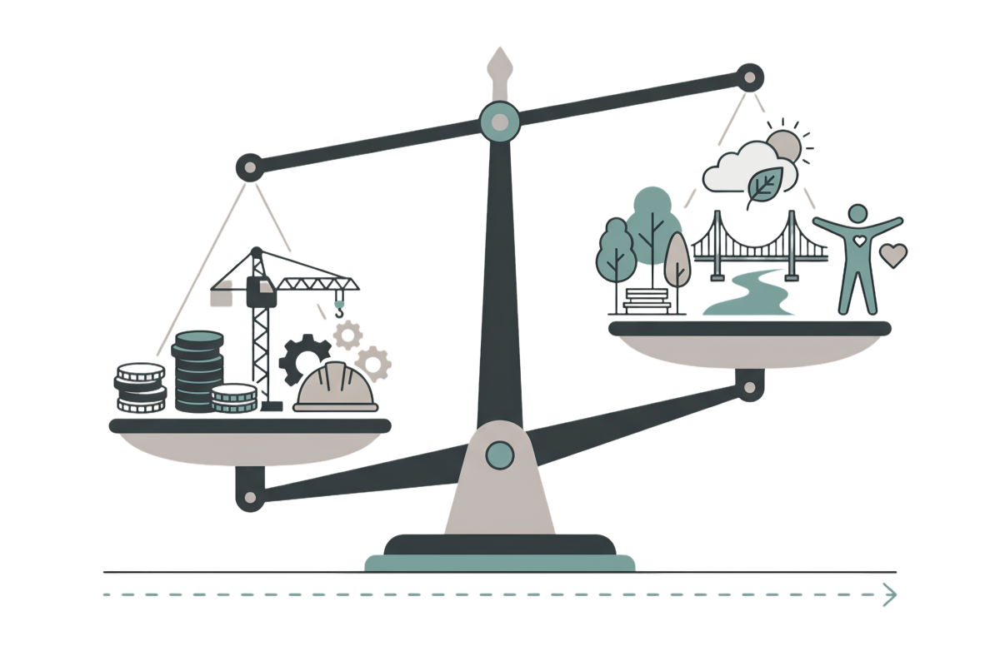
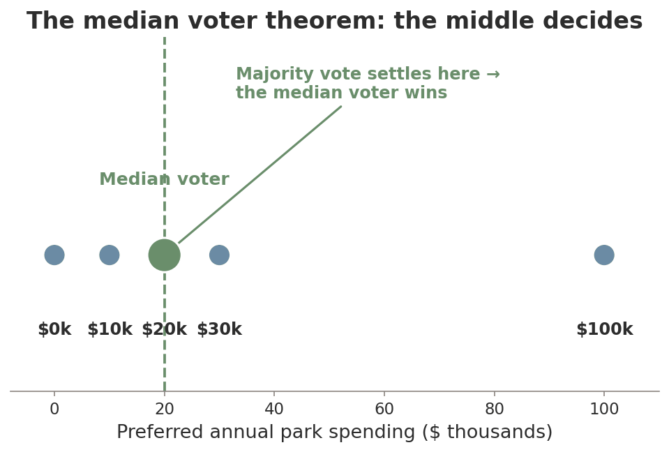

ECON 1116 • Principles of Microeconomics • Chapter 17
A billion people read Wikipedia for free and only 2–3% ever donate. By the logic of self-interest, it shouldn’t exist. So why does it?
Dr. Richeng Piao
Department of Economics
Northeastern University
17.1
Classify goods using the rivalry & excludability framework
17.2
Explain the free-rider problem — why markets underprovide public goods
17.3
Analyze the tragedy of the commons and evaluate solutions
17.4
Describe how governments use cost-benefit analysis to decide what to provide
17.5
Identify sources of government failure — rent-seeking, capture, the median voter
A competitive market maximizes total surplus — but only for goods with two properties. What two properties make a market work?
Last chapter a factory overproduced because it ignored a spillover cost. Can you name a good the market produces too little of?
Name something you use every day that you’ve never paid for — and that no one could stop you from using.
Discuss with your neighbor — 90 seconds.
Wikipedia is the 5th-most-visited site on earth. No ads, no paywall, no subscription. Yet it survives:
1B+
devices read it every month
$208.6M
revenue — almost all donations
2–3%
of readers ever donate
97%
read for free — free-riders
If you can enjoy it whether or not you pay, why would you pay? By the logic of self-interest, Wikipedia should collapse.
Some goods — defense, clean air, streetlights — share this feature. Markets, so good at pizza, fail at these. That’s today.
Section 1 · LO 17.1
Whether a market works depends on two simple properties.
Excludability
Can the supplier prevent non-payers from consuming it? A movie ticket: yes. A streetlight: no — you can’t stop someone seeing by its glow.
Rivalry
Does one person’s use reduce what’s left for others? A burrito: yes (eat it, it’s gone). A podcast: no — your listening doesn’t diminish mine.
Markets work beautifully when a good is both excludable and rival. Relax either one and trouble starts.

Private — rival + excludable. Markets nail these.
Club — excludable, not rival. Firms profit (Netflix, tolls).
Common resource — rival, can’t exclude. Overused (§17.3).
Public — neither. Underprovided (§17.2).
ChatGPT, pre-2024 — paywall = club good (excludable, non-rival).
ChatGPT free tier at peak hours — anyone signs up (non-excludable) but caps bite as compute gets scarce → common resource.
Open-weight models (Llama 4) — download once, non-rival & non-excludable → public good... until you need a $40k GPU to run it.
Common misconception: “A good is permanently public or private.” No — goods move between boxes as tech and policy change. NYC’s roads became excludable overnight when the $9 toll began.
On a quiet Tuesday, Boston Common is a public good — your stroll doesn’t reduce anyone else’s.
On a packed July 4th — blankets edge to edge, trash overflowing — it becomes rival. Now it’s a common resource.
Where on the matrix does it sit? Does your answer depend on the day?
A fireworks display over the Charles River. Anyone can watch from anywhere, and your watching doesn’t block mine. What kind of good is it?
Section 2 · LO 17.2
When everyone benefits whether they pay or not, who pays?
The tendency to enjoy a non-excludable good without paying for it — because your consumption can’t be prevented whether you contribute or not.
Each person’s contribution is tiny relative to total cost...
...and each captures only a sliver of total benefit. So everyone waits for someone else.
Result: the good is underprovided — or not provided at all.

200 neighbors value a fountain at $100 each → $20,000 total benefit.
Contractor quotes $7,000. Clearly passes the cost-benefit test.
Pass the hat: only $3,000 comes in. “My $35 won’t make or break it.” No fountain.
National defense — perfectly non-rival & non-excludable. US spent $886B in FY2024. No firm could charge for it.
NATO free-riding — for decades the US over-paid while allies skipped the 2% target. Only after Ukraine did 23 of 32 finally meet it.
GPS — built & run by the US military, free to all. ~$1.4 trillion/yr in value (NIST). Rideshare, shipping, farming all free-ride.
Basic research — the seed of medicine & new materials. Government funds ~25%; firms prefer patentable applied R&D.
Free-riding scales from a block party to an alliance of nations. The threat had to become real before most allies stopped free-riding.

Private good: add quantities horizontally. Everyone buys their own amount.
Public good: everyone consumes the same unit → add willingness to pay vertically.
Efficient where social WTP = MC → 5 days. But neither Leo nor Rachel alone would pay $5.
Private patches — social pressure ("if everyone gave $3..."), warm-glow giving, and selective incentives (tote bags, member-only hikes — Olson 1965).
But imperfect: Wikipedia’s 97% still free-ride; firms fund little basic science.
Government solution — tax everyone $35, collect $7,000, build the fountain. Each pays less than their $100 value → everyone wins.
Section 3 · LO 17.3
Public goods: too little. Common resources: too much.
Tragedy of the commons — a shared resource gets overused because each user gets the full private benefit but bears only a fraction of the cost.
A pasture open to all. Each herder gains the whole value of one more cow; the overgrazing cost is spread across everyone.
Each adds another cow — and the pasture collapses for all.

Atlantic cod — collapsed ~1992, 32-yr moratorium, 40,000 jobs. Reopened 2024 — still not recovered.
Pacific bluefin tuna — strict international quotas rebuilt the stock a decade early; 2025 US quota +80%.
Colorado River — over-allocated since 1922; seven states deadlocked as 2026 guidelines expire. Each acts in self-interest.
Orbital space — 10,000+ satellites; cascading-collision (Kessler) risk threatens access for everyone.
A congested road is a commons too — until a toll makes it excludable. That’s the Ch 16 link.
Each fisher thinks: “If I leave fish behind, someone else just catches them. I’m better off fishing more.”
Marginal private benefit of one more unit > marginal private cost — because the depletion cost is external.
It’s the prisoner’s dilemma from Ch 13 — “defect” (overuse) dominates, so everyone overuses.
When everyone plays their dominant strategy, the resource collapses — even though all would be better off cooperating.

Social optimum ≈ 40 hrs: catch peaks at 240 fish (24 each).
But if the other 9 fish 4 hrs, you gain by fishing 6. Everyone does → 80+ hrs.
Past max sustainable yield — exactly what sank the Grand Banks cod.
1. Regulation — quotas, taxes, tradable permits (ITQs: Iceland 1984, New Zealand).
2. Privatization — one owner internalizes depletion. Works for grazing land; fails for open ocean.
3. Community self-governance — users write & enforce their own rules. Maine lobster co-ops: trap limits, V-notching, social sanctions — thriving 100+ years.
Elinor Ostrom (Nobel 2009) documented 800+ successful community commons — refuting Hardin’s “only markets or government” claim.
Plastics Treaty (Aug 2025) — collapsed
8M tons of plastic enter the ocean/yr. 170+ nations; oil producers blocked binding limits. Thousands of producers, few substitutes, huge stakes.
Montreal Protocol — succeeded
Phased out CFCs. Few producers, ready substitutes, modest compliance cost relative to benefit.
The design of cooperation matters as much as the intent. Same prisoner’s dilemma — very different payoffs.
Maine’s lobster fishery has thrived for a century with no federal manager — fishers set trap limits and enforce them socially. This is closest to which solution?
Section 4 · LO 17.4
No prices to follow — so estimate costs and benefits directly.
1. Identify all costs & benefits — direct and the indirect ones easy to overlook.
2. Monetize everything — even clean air & saved time. The hard, controversial step.
3. Discount future flows to present value (Ch 15) — the rate can flip the verdict.
4. Compare & decide — do it if net benefit > 0; rank rivals by net benefit per dollar.
Deceptively simple rule, genuinely hard execution — Steps 2 and 3 are where the fights happen.
Benefits: −11% traffic, +23% faster commute, −22% PM2.5, −7% crashes, +7.7% transit. $550M+ revenue → $15B transit capital.
Costs: $9/entry, hitting lower-income drivers hardest; higher delivery costs; fierce political backlash.
Aggregate math: benefits >> costs. But CBA can’t say if the distribution is fair.

Contingent valuation
Survey: “What would you pay to prevent an oil spill?” Used to assess Exxon Valdez damages. Risk: hypothetical ≠ real.
Hedonic pricing
Infer value from markets: homes near parks cost more; risky jobs pay more (Ch 14) → the value of safety.
EPA value of a statistical life
$11.8M
Social cost of carbon
$190 / ton
Section 5 · LO 17.5
What if politicians are just as self-interested as everyone else?
Government failure — intervention that fails to improve efficiency, or makes it worse, because politicians’ & bureaucrats’ incentives diverge from the public interest.
Market failure justifies intervention — but only if government does better. Public choice applies the self-interest model to politics.
Spending resources to capture a transfer from government rather than create value (Ch 11).
Spend $10M lobbying for a tariff worth $50M? The $10M is pure waste — deadweight loss.
US federal lobbying, 2024: a record $4.4 billion. Pharma alone: $451.8M. Realtors (top org): $86.3M.
A regulator created to serve the public comes to be dominated by the industry it regulates — writing rules that benefit the industry at consumers’ expense.
George Stigler (Nobel 1982) formalized it. Classic case: FAA & Boeing after the 737 MAX crashes.
The “revolving door” — regulators take industry jobs and back — quietly rewards lax enforcement.

Majority rule on one issue → the median voter’s choice wins (Black 1948, Downs 1957).
Candidates converge to the center — extremes get ignored.
The median voter has no reason to weigh anyone else’s value → the efficient level is hit only by luck.
A sugar tariff costs each household ~$10/yr (you shrug) but hands a few producers millions (they lobby furiously). The tariff survives — even though total cost > total benefit.
Rational ignorance — your one vote won’t decide anything, so learning the issue isn’t worth it. Organized interests fill the void.
Buy a car: you bear the full cost, so you research hard. Vote on a bond: payoff to research ≈ zero.
The question is never “is government perfect?” It’s “is government failure less costly than the market failure it fixes?”
Clearly worth it: defense, basic research, environment, public health. Infrastructure saves ~$700/household/yr (ASCE).
Often not: subsidies to connected industries, rules written by the regulated. Captured programs.
Not anti- or pro-government — institutions matter. Transparency & accountability shrink failure; Ostrom’s principles apply to democracy too.
A stable climate
Non-rival, non-excludable → a global public good. Every country wants others to cut — the free-rider problem with 190 players.
Open-source AI & its “public bad”
Llama/Gemma: billions in shared value. But AI misinformation is a non-excludable harm — #1 short-term global risk (WEF 2025).
Information quality may be the most important — and most threatened — public good of the digital age.
1. Two questions — rivalry & excludability — sort every good into private, club, common, or public.
2. Public goods are underprovided by the free-rider problem; the standard fix is tax-funded provision.
3. Common resources are overused — the tragedy of the commons. Fix: regulation, privatization, or Ostrom self-governance.
4. Cost-benefit analysis guides provision — but monetizing & discounting are contested, and it’s silent on equity.
5. Government failure — rent-seeking, capture, median voter, rational ignorance — means intervention isn’t a free fix.
6. The real question: is government failure less costly than the market failure? Institutions decide.
Next time: Chapter 18 — Information, Uncertainty & Behavioral Economics. When we don’t know — or don’t act rationally.
Building On
Setting Up
From a free Wikipedia article to a collapsing fishery — one idea: when you can’t exclude, the market needs help.
Ava values streetlights at $6, $4, $2 for the 1st, 2nd, 3rd. Ben values them at $4, $3, $1. Each light costs $5.
Using vertical summation, how many streetlights should be provided? One line of work.
Submit on Canvas. 3 minutes.